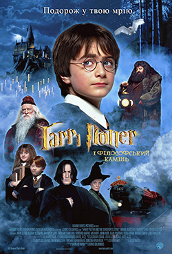

Ласкаво просимо у світ магії
«Гаррі Поттер і філософський камінь» — це перша книга із серії про хлопчика-чарівника Гаррі Поттера. Вона знайомить читача зі світом магії, школою Гоґвортс, дружбою, небезпекою та боротьбою добра зі злом.
На цьому сайті можна дізнатися основну інформацію про книгу, автора, сюжет, головних персонажів та моє особисте враження.

Цитата дня
Натисніть кнопку, щоб побачити цитату.
Магія
Книга відкриває незвичайний світ заклять, таємниць і пригод.
Дружба
Гаррі, Рон і Герміона показують, що справжні друзі підтримують одне одного.
Сміливість
Герої вчаться не здаватися навіть тоді, коли їм страшно.